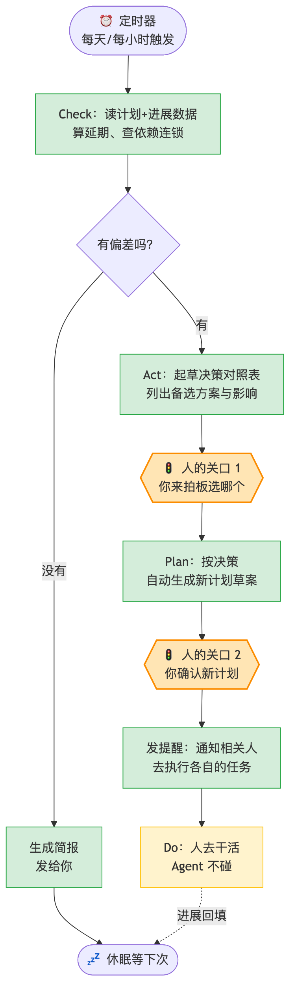
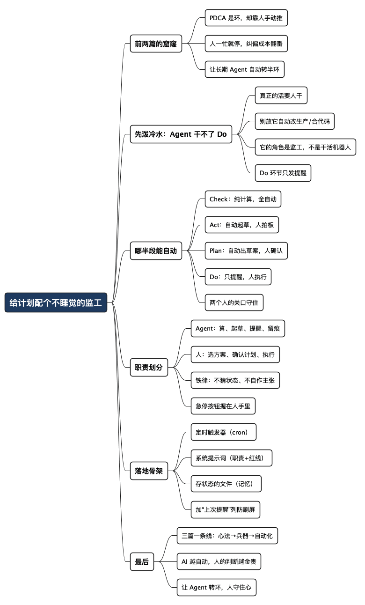

用 AI 做好计划之三：配个不睡觉的监工
Posted on 四 06 8月 2026 in AI
| Abstract | 用 AI 做好计划之三：配个不睡觉的监工 |
|---|---|
| Authors | Walter Fan |
| Category | learning note |
| Version | v1.0 |
| Updated | 2026-08-06 |
| License | CC-BY-NC-ND 4.0 |
用 AI 做好计划之三：配个不睡觉的监工
写完前两篇，我自己回头一读，发现藏着个没说破的窟窿。
第一篇《用 AI 做好计划之一：把 PDCA 环转起来》讲心法，第二篇《用 AI 做好计划之二：趁手的工具与 Skill》讲工具，两篇都在教你怎么用 AI 帮着转 PDCA 环。可它们有个共同的默认前提——每一步都得你主动去开对话、去喊 AI。
问题就出在这儿。PDCA 是个环，它的价值全在那个“环”字：不停地执行、检查、纠偏，转一圈再转一圈。可我给的方案里，Check 靠“你记得去问 AI 延期没有”，Act 靠“你想起来了才去让它摆选项”，Plan 靠“你有空了才去调”。
这个环，是靠人手动推着转的。而人，一忙起来就停。
我自己就是活生生的反例。项目一进入攻坚期，最先被丢下的就是“每天看一眼计划”这件事——不是不重要，是没那个心力。等某天猛地想起来，往往已经连环延期好几天，纠偏成本翻了番。
所以这一篇要补的，就是这个窟窿：能不能让一个长期运行的 AI Agent，替我把 Check→Act→Plan 这半个环自动转起来？让它定时盯着，该提醒提醒，该起草起草，我只在关键决策点介入。
答案是能。但先得把一个特别容易翻车的误区掐灭。
先泼盆冷水：Agent 干不了 Do
一说“长期运行的 Agent 自动管项目”，很多人脑子里浮现的是一个能自己干活的机器人：自动写代码、自动改配置、自动把任务做完。
打住。PDCA 里的 Do——真正把活干出来的那一步——Agent 干不了，也不该让它干。
道理很朴素：缓存改造要人去写、压测环境要人去批、灰度上线要人去点按钮、跟上游对齐要人去聊。这些是“现场”，Agent 没有手，也不该有那么大的权。你要是真放它去自动改生产、自动合代码，那不叫做计划，那叫埋雷。
所以 Agent 在 Do 这一步的正确角色，不是“替人干活”，而是——
提醒相关的人，去把该干的活干了。
这一句话，是这整篇的地基。想清楚了它，Agent 的定位就稳了：它不是替你干活的机器人，是个永不睡觉的监工 / 项目助理。 它盯着进度、算着延期、起草着方案、到点了敲你和相关人一下——但真正落地的活，还是人干；真正拍板的决策，还是人做。
明白了这一点，咱们再看它能自动转起来的到底是哪半个环。
这个环，哪半段能自动，哪半段留给人
把 PDCA 拆开看，四个环节对“自主”的容忍度天差地别：
- Check（检查）：读数据、算延期、比对计划——纯计算，没有副作用，最适合全自动。
- Act（处置）：分析偏差、摆出选项、起草变更说明——可以自动起草，但拍板留给人。
- Plan（计划）：根据新情况调整任务和时间线——可以自动出草案，但确认留给人。
- Do（执行）：实际把活干出来——Agent 只发提醒，人来干。
看出来了吧，能真正“无人值守”跑起来的，其实只有 Check 这一段纯计算。剩下三段，Agent 都只能做到“起草 + 提醒”，最后那一下必须是人。
我把这个循环画出来，绿色是 Agent 自动跑的，橙色是必须人介入的关口：

这张图的关键，是那两个橙色的 🚦 人的关口。Agent 可以一路自动跑到关口前，把该算的算好、该起草的草稿备好，但过关口这一下，必须人点头。 这就是我说的“人在环中的监工”——Agent 把环推到你面前，你只负责在两个关口上按“通过”或“打回”。
把场景落到一个具体的工作日。你是一个 Scrum Master，负责一个双周迭代，给监工 Agent 定的作息是：每个工作日早上 9 点，它读一遍 Jira 和任务表，算谁的任务今天到期、谁已经落后；发现某张卡三天没动过，就在群里 @ 当事人一次——不是八遍，它记得上次提醒的时间；周五下午，它把本周的燃尽情况和延期清单整理成一份周末简报发给你。你早上睁眼的第一件事，不再是挨个去问“昨天咋样了”，而是看它留给你的那几条提示。
职责划分：哪些交给 Agent，哪些死死攥在人手里
上面那张图是流程，这张表是权责。搭一个长期 Agent 之前，先把这张表贴墙上，比什么都重要——它决定了你的 Agent 是助手还是隐患。
| 环节 | 交给 Agent 自动做 | 死死留给人 | 为什么这么分 |
|---|---|---|---|
| Check | 定时读数据、算延期、查依赖连锁、出简报 | （几乎全放手） | 纯计算无副作用，错了也只是误报，代价低 |
| Act | 分析偏差、生成决策对照表、算每个方案的影响 | 选哪个方案 | 取舍是判断，判断是人的责任，Agent 给不了担当 |
| Plan | 按拍板结果自动生成新计划草案 | 确认草案是否采用 | 计划的灵魂是目标和优先级，不能让它偷偷改掉 |
| Do | 只发提醒：通知相关人该干什么、到期了没 | 实际执行、动生产、合代码 | Agent 没有手，也不该有那么大的权 |
| 全局 | 记录每一步、留痕、可追溯 | 随时能一键叫停 | 长期跑的东西，人必须始终握着急停按钮 |
这张表里，我最想强调最后一行：急停按钮。 一个长期运行、还能自动发通知的 Agent，一旦逻辑跑偏（比如误判延期、疯狂 @ 人），破坏力不小。所以从第一天起就得给它留一个“人能随时喊停”的口子——哪怕就是个开关配置。能自动跑的前提，是能随时不跑。
拿冲刺来说，那两个关口对应的是项目管理里最敏感的两个决定：改不改范围、动不动交付日期。你作为项目经理，这两个必须你点头——Agent 可以把每个方案的影响算得明明白白，但它不能替你承担对客户的承诺。这也是我坚持“人在环中”的原因：自动化的边界，永远画在“责任”这条线上。
Agent 越自动，人越要握紧两样东西：拍板权，和急停键。 前者保证方向不偏，后者保证失控可救。
落地：一份可抄的长期 Agent 配置骨架
概念讲透了，上干货。搭一个这样的监工 Agent，说穿了就三块：一个定时触发器 + 一份系统提示词（定死它的职责和红线）+ 一个存状态的地方。 下面给你能直接改的骨架。
1）定时触发器
不用什么高深技术，一个 cron 就行。让它每天早上九点跑一次 Check：
# crontab：每个工作日 09:00 唤醒监工 Agent 跑一轮 Check
0 9 * * 1-5 /path/to/run_pdca_agent.sh >> /path/to/agent.log 2>&1
run_pdca_agent.sh 里干的事：读计划文件 → 调用 AI（带下面的系统提示词）→ 把结果写回，该提醒的通过邮件/IM 发出去。
2）系统提示词（Agent 的“职业操守”）
这是最核心的一块，把职责和红线全写死在这儿：
# 角色
你是一个长期运行的 PDCA 监工 Agent。你不替人干活，
你的职责是盯进度、算偏差、起草方案、提醒相关人。
# 每次唤醒后的固定流程
1. Check：读取计划文件和最新进展记录，对照今天日期，
算出：哪些任务已延期、哪些有延期风险、有无依赖连锁风险。
2. 判断：
- 无偏差 → 生成一段三句话简报，发给项目负责人，结束。
- 有偏差 → 进入 Act。
3. Act：为每个偏差生成“决策对照表”（方案/利/弊/风险/对目标影响），
标注【需人拍板】，发给项目负责人，然后停下等指令，不要自作主张选方案。
4. 收到人的拍板后 → Plan：生成新计划草案，标注【需人确认】，等确认。
5. 人确认后 → 发提醒：逐条通知每个任务的负责人
“你负责的 X 任务，新的截止时间是 Y，请跟进”，然后结束。
# 铁律（违反即视为故障）
- 绝不猜测任务进度：进展只以人/系统提供的记录为准，没记录就标“进度未知”并提醒补录。
- 绝不自行选择方案、绝不自行确认计划：Act 的选择和 Plan 的采用必须由人点头。
- 绝不执行实际任务、绝不改动任何生产系统或代码：你只发提醒，活由人干。
- 每一步都要留痕：写清楚“我做了什么、依据是什么、通知了谁”。
- 收到“暂停”指令立即停止一切自动动作。
3）存状态的地方
长期 Agent 跟一次性对话的最大区别，就是它得记得上一轮发生了什么。用最简单的办法：一个结构化文件当它的“记忆”，每轮读进来、更新、写回去。沿用前两篇那张任务表就行：
| 任务 | 负责人 | 计划完成 | 进度 | 上次提醒 | 风险/备注 |
|---|---|---|---|---|---|
| 压测基线 | A | 08-10 | 60% | 08-06 | 环境待批 |
| 缓存改造 | B | 08-18 | 0% | - | 依赖压测结果 |
多了一列“上次提醒”——这样 Agent 就不会同一件事一天 @ 你八遍（这是最招人烦、也最容易让人把它关掉的毛病）。
这三块拼起来，你就有了一个最朴素但能真正长期跑的 PDCA 监工。想升级？把读数据那一步接上真实数据源（CI、监控、工单），把发提醒那一步接上你的 IM——但核心的职责和红线，就是上面那份系统提示词，一个字都别松。
最后补一个让环闭合的细节。冲刺结束那天，让它把本周的复盘结论归档：哪些事做得好、哪些拖了后腿、下个迭代怎么改——这份归档，就是下一个冲刺 Plan 的输入。很多团队开完回顾会就算完事，Agent 帮你把 PDCA 的这一圈真的连上了：转完一圈又回到起点，但起点已经比上一圈高了一点。
最后一句
三篇写下来，其实是一条线：
- 第一篇讲心法——人主导、AI 助攻，把 PDCA 环转起来；
- 第二篇讲兵器——用什么工具、怎么把方法论固化成 Skill；
- 这一篇讲自动化——用一个长期 Agent 把环的 Check→Act→Plan 半段自动推起来，人只守两个关口。
你可能注意到了，越往后走，AI 承担的越多，但人守住的那几样东西反而越来越清晰、越来越硬：目标、取舍、拍板、急停键。这不是巧合。自动化程度越高，人的判断就越金贵——因为能自动的部分早晚会被自动掉，剩下留给人的，全是机器不敢也不该替你扛的责任。
所以别怕给计划配个不睡觉的监工。它替你扛掉的是“记得去看、记得去算、记得去提醒”这些又累又机械的心力活；它替不了的，是“往哪儿走、要不要变、值不值得”这些真正属于你的判断。
让 Agent 转动那个环，让你专心守住那个心。
全文思维导图
@startmindmap
<style>
mindmapDiagram {
node {
BackgroundColor #F8F9FA
RoundCorner 10
Padding 10
FontSize 13
}
:depth(0) {
BackgroundColor #1E3A5F
FontColor white
FontSize 18
FontStyle bold
}
:depth(1) {
FontSize 15
FontStyle bold
}
:depth(2) {
FontSize 13
}
}
</style>
* 给计划配个不睡觉的监工
** 前两篇的窟窿
*** PDCA 是环，却靠人手动推
*** 人一忙就停，纠偏成本翻番
*** 让长期 Agent 自动转半环
** 先泼冷水：Agent 干不了 Do
*** 真正的活要人干
*** 别放它自动改生产/合代码
*** 它的角色是监工，不是干活机器人
*** Do 环节只发提醒
** 哪半段能自动
*** Check：纯计算，全自动
*** Act：自动起草，人拍板
*** Plan：自动出草案，人确认
*** Do：只提醒，人执行
*** 两个人的关口守住
** 职责划分
*** Agent：算、起草、提醒、留痕
*** 人：选方案、确认计划、执行
*** 铁律：不猜状态、不自作主张
*** 急停按钮握在人手里
** 落地骨架
*** 定时触发器（cron）
*** 系统提示词（职责+红线）
*** 存状态的文件（记忆）
*** 加“上次提醒”列防刷屏
** 最后
*** 三篇一条线：心法→兵器→自动化
*** AI 越自动，人的判断越金贵
*** 让 Agent 转环，人守住心
@endmindmap

本作品采用知识共享署名-非商业性使用-禁止演绎 4.0 国际许可协议进行许可。 欢迎在我的个人网站 https://www.fanyamin.com 访问原文并评论。